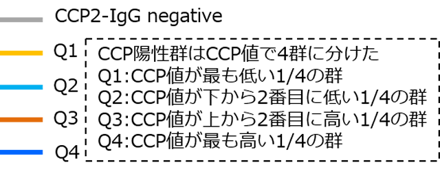
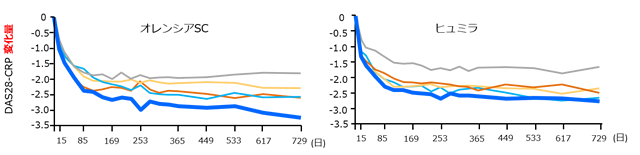
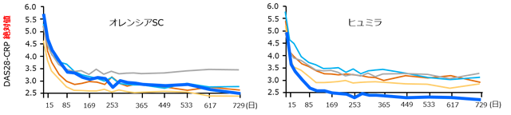

対オレンシア②セロポジ
AMPLE試験サブ解析のトリック
AMPLE試験はMTXで効果不十分なRA患者に対し、オレンシア皮下注のヒュミラに対する非劣性を証明した国際共同第3b相ランダム化評価者盲検試験。サブ解析としてCCP抗体の値で患者群を分け、各群における薬剤の有効性を比較。

AMPLE試験のデータ

DAS28-CRPの変化量だけをみるとCCP抗体高値群では オレンシアの方がよく効いているように見える
ベースラインの疾患活動性がもともと違うので、DAS28値をベースの値に戻してみる

ベースラインの疾患活動性を合わせると、実際はヒュミラのほうが抗CCP抗体高値群によく効いている
AMPLE試験のサブ解析をもってTNFよりABTの方がCCP高値例に効果が高いというのは間違い